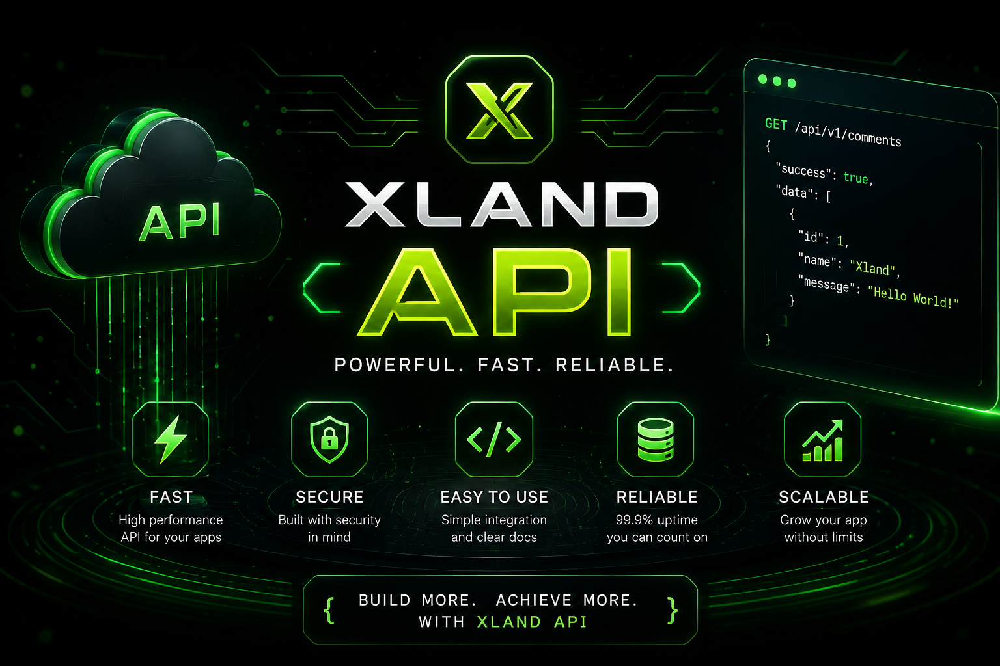

🛡️ Welcome to Xland Hub 5.3
Xland Hub 5.3 has officially arrived.
Following the major interface and ecosystem improvements introduced in Xland Hub 5.2, version 5.3 focuses on improving the security and usability of the Xland Hub experience.
This release introduces additional frontend security protections, improved input handling, stronger comment protection and a redesigned comment submission experience.
The goal of Xland Hub 5.3 is simple: make the existing Xland ecosystem safer, cleaner and more comfortable to use without removing the features that users already know.
🔥 What's New in Xland Hub 5.3
Xland Hub 5.3 is a security and experience-focused update.
Instead of replacing the existing Xland Hub system, this version improves several existing components and adds additional protection layers around frontend interactions.
🚀 Xland Hub 5.3 Highlights
- 🛡️ Xland Security improvements
- 🔐 Improved frontend input protection
- 🚫 Frontend source protection
- 🚫 Right-click protection
- 🚫 Ctrl + U protection
- 🚫 F12 protection
- 🚫 Developer shortcut protection
- 💬 Redesigned comment experience
- ✨ Premium comment composer UI
- 🎨 Improved comment animations
- 📊 Comment character counter
- 🧹 Improved text sanitization
- 🔗 URL validation improvements
- 🎥 Video URL validation
- 📄 JSON validation
- 📁 Filename validation
- 🔐 Login attempt protection
- ⏱️ Comment rate limiting
- 🧼 Sensitive data cleanup
- ♿ Reduced-motion support
- 📱 Continued responsive improvements
- 🌐 Continued Xland ecosystem development
🛡️ Xland Security Upgrade
One of the biggest focuses of Xland Hub 5.3 is security.
The Xland Security system has been expanded to provide additional validation and protection mechanisms for different parts of the frontend.
The updated security layer is designed to help reduce common frontend risks such as unsafe input, unsafe URLs, invalid video data and excessive comment submissions.
🛡️ Security Features
- 🛡️ XSS protection helpers
- 🧹 Input sanitization
- 🔤 HTML escaping
- 🔗 URL validation
- 📄 JSON validation
- 🎥 Video validation
- 📁 Filename validation
- 🖼️ Thumbnail URL validation
- 💬 Comment protection
- ⏱️ Comment rate limiting
- 🔐 Login attempt protection
- 🧹 Sensitive data cleanup
🚫 Frontend Source Protection
Xland Hub 5.3 also introduces a frontend source protection layer designed to discourage casual attempts to inspect the website through common browser shortcuts.
The protection layer can detect several common keyboard shortcuts and prevent them from performing their default browser action while the protection script is active.
🚫 Protected Shortcuts
- 🚫 Ctrl + U
- 🚫 F12
- 🚫 Ctrl + Shift + I
- 🚫 Ctrl + Shift + J
- 🚫 Ctrl + Shift + C
- 🚫 Right-click context menu
These protections are intended as a deterrent against casual inspection and are not considered a replacement for real server-side security.
🔐 Security Philosophy
Xland Hub 5.3 follows an important security principle: frontend code should never be treated as a secure location for private credentials.
HTML, CSS and JavaScript are delivered to the user's browser, which means frontend code can ultimately be inspected.
For this reason, sensitive information such as API keys, passwords and private server credentials should not be stored inside public frontend files.
🔒 Xland Security Principles
- 🔐 Never place private passwords in frontend code
- 🔑 Never expose sensitive API credentials
- 🖥️ Keep real secrets on the server
- 🧹 Validate untrusted input
- 🔗 Validate URLs before using them
- 📄 Validate external data
- 🛡️ Use frontend protection as an additional layer
💬 Improved Comment Experience
Xland Hub 5.3 also brings a visual upgrade to the comment submission experience.
The comment composer has been redesigned to provide a more modern and polished interface while keeping the existing comment functionality intact.
The new design uses the Xland Glass and Neon visual language to create a more immersive comment experience.
💬 Comment Improvements
- 💬 Redesigned comment composer
- ✨ Glass-style interface
- 🌌 Neon visual effects
- 💫 Animated comment icon
- ⚡ Smooth input animations
- 📊 Character counter
- 🚀 Improved send button
- ✨ Button hover effects
- 🪄 Comment entry animations
- 📱 Mobile-friendly layout
- ♿ Reduced-motion support
✨ A New Comment Composer
The comment area now provides a more focused writing experience.
The redesigned composer places the comment title, description, input area, character counter and send button into a cleaner visual structure.
💎 Composer Features
- 💬 Centered comment header
- 💫 Animated comment icon
- ✨ Neon accent effects
- 🪟 Glassmorphism panel
- 📝 Improved textarea presentation
- 📊 Live character counter
- 🚀 Animated send button
- 📱 Responsive design
🧹 Improved Input Protection
Xland Hub 5.3 continues improving the way user-provided data is handled inside the frontend.
The Xland Security system includes reusable helpers for sanitizing text, escaping HTML and validating different types of input.
🧹 Input Security
- 🧹 Text sanitization
- 🔤 HTML escaping
- 📏 Text length limits
- 📧 Email validation
- 👤 Username validation
- 🔐 Password validation
- 📄 JSON validation
- 🔗 URL validation
🎥 Video Security Improvements
Xland Hub 5.3 continues protecting video-related data through validation systems inside Xland Security.
Video URLs, filenames, thumbnails and video objects can be checked before being processed by the application.
🎥 Video Protection
- 🎥 Video URL validation
- 📁 Video filename validation
- 🖼️ Thumbnail URL validation
- 📄 Video object validation
- 📊 Video collection validation
- 📦 Video JSON validation
- 🚫 Unsafe protocol detection
📄 Safer JSON Handling
The Xland Security system also provides validation for JSON data used by Xland services.
Before video collections are processed, their structure can be checked and invalid entries can be rejected.
📄 JSON Protection
- 📄 JSON format validation
- 🧩 Object structure validation
- 🎥 Video collection validation
- 📏 Collection size limits
- 🚫 Invalid object rejection
- 🧹 Video data sanitization
🔐 Login Attempt Protection
Xland Hub 5.3 also includes protection helpers for limiting repeated login attempts.
The system can track unsuccessful attempts and temporarily lock further attempts after the configured limit is reached.
🔐 Login Protection
- 🔢 Attempt counting
- ⏱️ Temporary lockout
- 🔄 Attempt reset
- 🧹 Sensitive password field cleanup
- 🛡️ Additional frontend protection layer
⏱️ Comment Rate Limiting
Xland Hub 5.3 also includes a comment rate-limiting mechanism inside the Xland Security layer.
The system is designed to prevent rapid repeated comment submissions from the same browser session.
⏱️ Comment Protection
- ⏱️ Submission cooldown
- 🔢 Maximum comments per minute
- 🧠 Session-based tracking
- 🚫 Excessive submission detection
- 🔄 Rate-limit reset support
🔗 Safer URL Handling
URLs are another important part of the Xland ecosystem.
Xland Security includes validation helpers designed to reject dangerous protocols and suspicious URL patterns before they are used.
🔗 URL Protection
- 🔗 URL format validation
- 🚫 Dangerous protocol detection
- 🚫 JavaScript URL protection
- 🚫 Data URL protection
- 🚫 File URL protection
- 📏 URL length limits
- 🧹 Control-character detection
📁 Filename Validation
Xland Hub 5.3 also validates video filenames before they are accepted by the security layer.
📁 Filename Protection
- 📏 Filename length limits
- 🚫 Path traversal detection
- 🚫 Invalid character detection
- 🚫 Null-byte detection
- 🎥 Allowed video extension validation
🔤 HTML Escaping
Xland Security includes reusable HTML escaping utilities to help safely handle user-provided text before it is inserted into HTML contexts.
🔤 HTML Protection
- 🔤 HTML entity escaping
- 🚫 Special-character protection
- 🧹 User-input cleanup
- 🛡️ XSS mitigation helper
♿ Accessibility & Reduced Motion
The improvements introduced in Xland Hub 5.3 continue supporting users who prefer reduced motion.
Animations and transitions can respect the user's system motion preferences.
♿ Accessibility
- ♿ Reduced-motion support
- 🖥️ System preference detection
- ✨ Reduced unnecessary animation
- 📱 Better mobile accessibility
- 🪄 More comfortable interface motion
📱 Continued Mobile Improvements
Xland Hub 5.3 continues the responsive improvements introduced in previous versions.
The updated comment interface and security-related UI components are designed to work across desktop and mobile screen sizes.
📱 Mobile Experience
- 📱 Responsive comment composer
- 📐 Flexible layouts
- 💬 Mobile-friendly textarea
- 🔘 Responsive buttons
- 📊 Mobile character counter
- ✨ Responsive animations
- ♿ Mobile accessibility improvements
💎 Xland Visual Design System
Xland Hub 5.3 continues using the visual identity established throughout previous Xland Hub releases.
✨ Xland Design Language
- 💎 Glassmorphism
- ✨ Neon highlights
- 🌌 Dark interface
- 🪟 Transparent panels
- ⚡ Smooth hover effects
- 🎞️ Entry animations
- 📐 Responsive layouts
- 🎨 Modern typography
🛡️ Xland Security v4.2
The security layer used by Xland Hub has also been updated as part of the 5.3 development cycle.
Xland Security v4.2 adds the new frontend source protection layer alongside the existing validation and protection utilities.
🛡️ Xland Security v4.2
- 🛡️ XSS protection helpers
- 🧹 Input sanitization
- 🔤 HTML escaping
- 🔗 URL validation
- 🎥 Video validation
- 📄 JSON validation
- 📁 Filename validation
- 💬 Comment protection
- ⏱️ Comment rate limiting
- 🔐 Login attempt protection
- 🧹 Sensitive data cleanup
- 🚫 Frontend source protection
- 🚫 Right-click protection
- 🚫 Keyboard shortcut protection
⚠️ An Important Security Note
Frontend protection can make casual inspection more difficult, but it cannot completely hide frontend code.
A browser must receive HTML, CSS and JavaScript in order to display a website. Therefore, frontend security mechanisms should be considered an additional layer of protection rather than a replacement for server-side security.
🌐 Everything You Already Know Is Still Here
Xland Hub 5.3 is an improvement release, not a removal release.
The existing Xland ecosystem continues to remain part of the Hub while new security and interface improvements are added around it.
🌎 Xland Ecosystem
- 🤖 Xland AI
- 🤖 Xland AI Copilot
- 🎮 Xland Games
- 👻 Endless Road Horror 3D
- 🌎 Xland Map
- 🎬 Xland Video
- 📰 Xland News
- 🛠️ Xland Support
- 💻 Xland Developer Tools
- 🌐 Xland API
- 📜 Xland Script
- 🛒 Xland Shop
🚀 From Xland Hub 5.0 to 5.3
Xland Hub continues evolving through every major release.
📈 Xland Hub Evolution
- 🚀 Xland Hub 5.0 — Major ecosystem expansion
- 🤖 Xland Hub 5.1 — Xland AI integration and News improvements
- 📱 Xland Hub 5.2 — Copilot, mobile improvements and Script redesign
- 🛡️ Xland Hub 5.3 — Security upgrade and improved comment experience
Each version builds on the previous one while expanding the functionality, security and identity of the Xland ecosystem.
🔮 What's Next?
Xland Hub 5.3 is another step in the continuing development of the Xland ecosystem.
Future versions may continue improving security, developer tools, games, AI experiences, services, interactive features and other parts of Xland.
🚀 Future Possibilities
- 🎮 More Xland games
- 🌎 More maps
- 🎬 More videos
- 📰 More news
- 💻 More developer tools
- 🌐 More API services
- 📜 More Xland Script features
- 🤖 Further Xland AI development
- 🛒 More Shop features
- 🛠️ Better support systems
- 🛡️ Further security improvements
- ✨ More interactive Hub features
🎉 Xland Hub 5.3 Is Here
Xland Hub 5.3 represents another important stage in the development of the Xland website and ecosystem.
From the upgraded Xland Security system and frontend protection to the redesigned comment experience, this version focuses on improving the foundation of Xland Hub.
Xland Hub 5.3 is not about removing the existing Xland experience. It is about making the platform cleaner, safer and stronger while continuing to build on everything that came before it.
📸 Gallery

👤 Written by
Xland Team
Official developers of the Xland ecosystem.
💬 Comments (0)